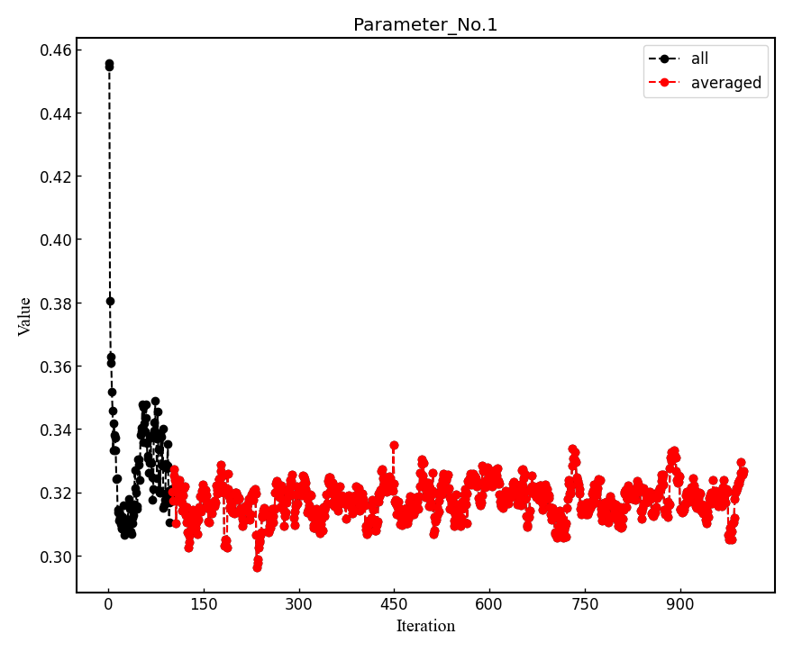
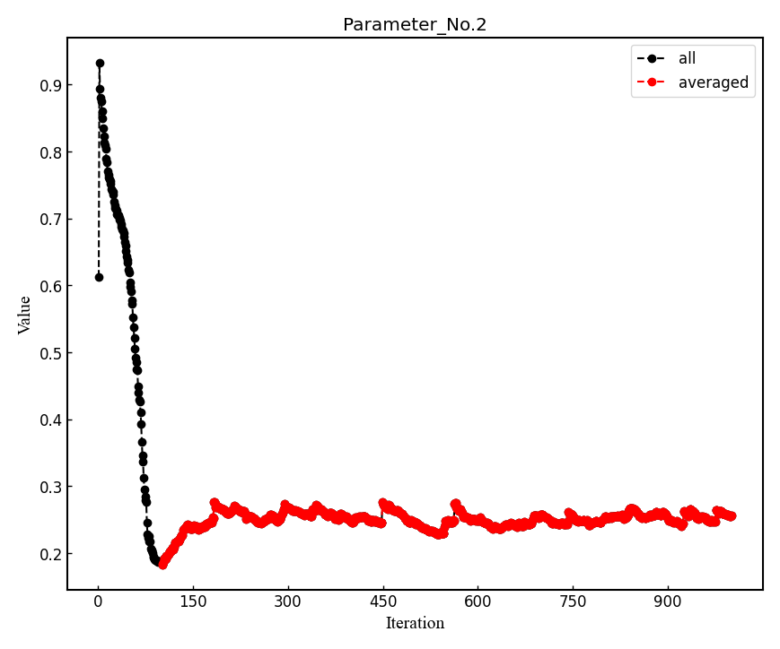

01Hydrogen_dimer¶
From this tutorial, you can learn how to calculate all-electron Variational Monte Carlo (VMC) and lattice regularized diffusion Monte Carlo (LRDMC) energies of the H2 dimer using Turbo-genius. There is also a TurboRVB tutorial, which does the same calculations but without using Turbo-Genius. For detailed information about input parameters in various input files, we recomment visiting that tutorial. You can download all the input and output files for this tutorial from here.
00 Important introduction for TurboGenius¶
TurboGenius has a very useful command line tool that allows us
to manipulate input and output files very efficiently. One of the most
useful function of the command line tool is its helper. To see this, please
try to type the following command:
% turbogenius --help
Usage: turbogenius [OPTIONS] COMMAND [ARGS]...
Options:
--help Show this message and exit.
Commands:
convertfort10 convertfort10_genius
convertfort10mol convertfort10mol_genius
convertpfaff readforward_genius
convertwf convert wavefunction
correlated-sampling correlated_sampling_genius
lrdmc lrdmc_genius
lrdmcopt lrdmc_genius
makefort10 makefort10_genius
prep prep_genius
vmc vmc_genius
vmcopt vmcopt_genius
You can easily see what commands are implemented in TurboGenius.
Please type the following command to see what options are implemented for each command,
e.g., vmcopt:
% turbogenius vmcopt --help
Usage: turbogenius vmcopt [OPTIONS]
Options:
-post Postprocess
-r Run a program
-g Generate an input file
-vmcoptsteps INTEGER Specify vmcoptsteps
-optwarmup INTEGER Specify optwarmupsteps
-steps INTEGER Specify steps per one iteration
-bin INTEGER Specify bin_block
-warmup INTEGER Specify warmupblocks
-nw INTEGER Specify num_walkers
-maxtime INTEGER Specify maxtime
-optimizer TEXT Specify optimizer, sr or lr
-learn FLOAT Specify learning_rate
-reg FLOAT Specify regularization
-opt_onebody flag for opt_onebody
-opt_twobody flag for opt_twobody
-opt_det_mat flag for opt_det_mat
-opt_jas_mat flag for opt_jas_mat
-opt_det_basis_exp flag for opt_det_basis_exp
-opt_jas_basis_exp flag for opt_jas_basis_exp
-opt_det_basis_coeff flag for opt_det_basis_coeff
-opt_jas_basis_coeff flag for opt_jas_basis_coeff
-twist flag for twist_average
-kpts INTEGER... kpts, Specify Monkhorst-Pack grids and shifts,
[nkx,nky,nkz,kx,ky,kz]
-plot flag for plotting graph
-log TEXT logger level, DEBUG, INFO, ERROR
--help Show this message and exit.
e.g.,lrdmc
meiwaku20pc06% turbogenius lrdmc --help
Usage: turbogenius lrdmc [OPTIONS]
Options:
-post Postprocess
-r Run a program
-g Generate an input file
-steps INTEGER Specify lrdmcsteps
-bin INTEGER Specify bin_block
-corr INTEGER Specify correcting_factor
-alat FLOAT Specify alat
-etry FLOAT Specify etry
-warmup INTEGER Specify warmupblocks
-nw INTEGER Specify num_walkers
-maxtime INTEGER Specify maxtime
-twist flag for twist_average
-force flag for force_calc_flag
-nonlocal TEXT Specify nonlocalmoves, tmove, dla, dlatm
-log TEXT logger level, DEBUG, INFO, ERROR
--help Show this message and exit.
01 Preparing a JDFT trial wavefunction¶
01-01 Preparing a makefort10.input file¶
The first step of this tutorial is to generate an antisymmetrized Geminal Power (AGP) ansatz, which will be convert to a Slater determinant (SD) ansatz later. First, one should prepare makefort10.input to generate an AGP ansatz. The makefort10 module of Turbo-Genius can be used to generate AGP ansatz. Use the following command to generate a makefort10.input file. Remember that the structure file is also required at this step. Note: If you are interested in a pseudo-potential calculation, please refer to 02Carbon_dimer.
cd 01trial_wavefunction/00makefort10/
turbogenius makefort10 -g -str H2_dimer.xyz -detbasis cc-pVTZ -jasbasis cc-pVDZ -detcutbasis -jascutbasis
The command line options:
-jis used to specify the job type (like makefort10, prep etc.),-gis used to generate input files. Alternatively-rmay be used for running calculations and-postis used for postprocessing of results after running.-stris used to indicate the structure file name, which could be in several formats:.xyz,.cif,POSCAR,.vasp,.xsf, or whateverASE’sreadfunction supports.-detbasisis used to specify the basis set used to construct atomic orbitals for the determinant part. Here we are using cc-pVTZ type basis set to construct the atomic orbitals. See the –help for checking the basis set currently implemented.--cutdetbasisflag is a command line argument to cut the determinant basis set based on the AZ algorithm (see below) It makes sense only for an all-electron calculation.-jasbasisis used to specify the basis set used to construct atomic orbitals for the jastrow part. Here we are using cc-pVTZ type basis set to construct the atomic orbitals. See the –help for checking the basis set currently implemented.--cutjasbasisflag is a command line argument to cut the determinant basis set based on the AZ algorithm (see below) It makes sense only for an all-electron calculation.
This is a generated makefort10.input.
# makefort10 input
&system
posunits='bohr'
natoms=2
ntyp=1
complexfort10=.false.
pbcfort10=.false.
yes_pfaff=.false.
nxyz(1)=1
nxyz(2)=1
nxyz(3)=1
phase(1)=0.0
phase(2)=0.0
phase(3)=0.0
phasedo(1)=0.0
phasedo(2)=0.0
phasedo(3)=0.0
/
&electrons
orbtype='normal'
jorbtype='normal'
twobody=-6
filling='diagonal'
yes_crystal=.false.
yes_crystalj=.false.
no_4body_jas=.true.
neldiff=0
!onebodypar=1.0
twobodypar(1)=1.0
!twobodypar=1.0
/
&symmetries
nosym=.false.
eqatoms=.true.
rot_det=.true.
symmagp=.true.
/
ATOMIC_POSITIONS
1.00000000 1.00000000 0.00000000000000 0.00000000000000 -0.70014352917385
1.00000000 1.00000000 0.00000000000000 0.00000000000000 0.70014352917385
/
ATOM_1
&shells
nshelldet=7
nshelljas=4
/
1 1 16
1 0.325800000000
1 1 16
1 5.095000000000
1 1 16
1 1.159000000000
1 1 16
1 0.102700000000
3 1 36
1 1.407000000000
3 1 36
1 0.388000000000
5 1 37
1 1.057000000000
# Parameters atomic Jastrow wf
1 1 16
1 1.962000000000
1 1 16
1 0.444600000000
1 1 16
1 0.122000000000
3 1 36
1 0.727000000000
Note
We have cut first few orbitals from the basis sets for atomic wavefunction as well as for the Jastrow part (nshelldet and nshelljas should be changed accordingly) by the option -cutbasis. The basis set can be automatically cut by using the --cutbasis flag as a command line argument while generating the makefort10 input. It cuts the basis set based on the AZ algorithm. An empirical criteria is \eta \ge 8 \times Z^2 in the s channel, where Z = \rm{atomic number}. For example, we can discard the topmost \eta = 33.87 \ge 8 \times 1^2. The cut s orbitals are implicitly compensated by the one body Jastrow term (See J. Chem. Theory Comput. 2019, 15, 7, 4044-4055 ).
For explanations of the input variables, please refer to the doc files in the TurboRVB repository.
Warning
If you want to use your own Det. or Jas. basis sets, you can edit makefort10.input at this step.
01-02 Generating a JAGPs template¶
One can generate a JAGPs template using the prepared makefort10.input by typing:
turbogenius makefort10 -r # ``-r`` for running calculations
turbogenius makefort10 -post # ``-post`` for post-analysis or cleanup
# Note: the corresponding TurboRVB commands:
makefort10.x < makefort10.input > out_make # turbogenius makefort10 -r
mv fort.10_new fort.10 # turbogenius makefort10 -post
You can also do:
turbogenius makefort10 -r -post
The generated JAGPs template is the file fort.10.
At the same time, structure.xsf is generated. One can check if the input structure is what you expect.
01-03 Adding molecular orbitals to the JAGPs template¶
One should convert the generated JAGPs template to Jastrow Slater Determinant (JDFT) one to prepare a trial wavefunction using DFT. This can be done using the convertfort10 module. Generate an input file for convertfort10mol using:
mv fort.10 fort.10_in
turbogenius convertfort10mol -g
convertfort10 mol input will look like the following:
#convertfort10mol.input
&control
epsdgm=-1e-14
/
&mesh_info
ax=10
ay=10
az=10
nx=30
ny=30
nz=30
/
&molec_info
nmol=1
/
Note
These variables should be set so that the rectangular of (ax × nx)(ay × ny)(az × nz) encloses the molecule, and ax, ay, and az are small enough to be consistent with an electronic scale, typically 0.01 Bohr and 0.10 Bohr for all-electron and pseudo-potential calculations.
Warning
However, the size of grids are not necessarily small here because convertfort10mol.x puts random coefficients of molecular orbitals, just for initialization of the coefficients.
nmol, nmolmin, nmolmax The numbers of molecular orbitals. When they equals to N/2, where N is the total number of electrons in the system, JAGPs = JDFT.
After preparing convertfort10mol.input, run the calculation by typing the following commands to covert fort.10_in (JAGPs) to fort.10_new (JDFT) by:
turbogenius convertfort10mol -r
turbogenius convertfort10mol -post
# the corresponding turborvb commands are:
convertfort10mol.x < convertfort10mol.input > out_conv # turbogenius convertfort10mol -r
mv fort.10_new fort.10 # turbogenius convertfort10mol -post
The new JDFT template is fort.10. If you find 100000 (molecular orbital) in fort.10 and it counts N/2, you have successfully converted the JAGPs template to a JDFT one.
01-04 Run DFT¶
As written above, the coefficients of the molecular orbitals generated by convertfort10mol.x are random. Indeed, the fort.10 is just a template file. The next step is to optimize coefficients using a build-in DFT code, called prep.x. This is done by using the prep module of Turbo-Genius.
Copy the prepared fort.10 to 01DFT directory:
cd ../01DFT/
cp ../00makefort10/fort.10 ./
To generate input for a DFT calculation type the following command:
turbogenius prep -g -grid 0.2 0.2 0.2 -lbox 10.0 10.0 10.0
-gridspecifies the numerical grid size (the unit isbohr).-lboxspecifies the simulation box size (the unit isbohr).
Note
In the generated prep.input file, set nelocc to 1, indicating a single occupied spatial orbital. The occupation of this orbital is specified at the end of the input file (2 in this case, indicating a paired electrons)
The generated input file will look like:
#prep.input
&simulation
itestr4=-4
iopt=1
maxtime=3600
/
&pseudo
/
&vmc
/
&optimization
molopt=1
/
&readio
writescratch=1
/
¶meters
yes_kpoints=.false.
/
&kpoints
/
&molecul
ax=0.2
ay=0.2
az=0.2
nx=50
ny=50
nz=57
/
&dft
contracted_on=.false.
maxit=50
epsdft=1e-05
mixing=0.5
typedft=1
optocc=0
epsshell=0.01
memlarge=.false.
nelocc=1
/
2
Warning
One should carefully choose the size and the number of grids in DFT calculation. Grid sizes and the numbers should be set so that the rectangular of (ax × nx)(ay × ny)(az × nz) encloses the molecule, and ax, ay, and az are small enough to be consistent with an electronic scale, typically 0.01 Bohr and 0.10 Bohr for all-electron and pseudo-potential calculations. The so-called double-grid scheme avoids us from using the small size of grid for all-electron calculation. -doublegrid option activates this. Please refer to J. Chem. Theory Comput. 2019, 15, 7, 4044-4055.
After preparing prep.input, one can start DFT on a local machine:
# on a local machine (serial version)
prep-serial.x < prep.input > out_prep
# on a local machine (parallel version)
mpirun -np XX prep-mpi.x < prep.input > out_prep
If you want to run the job via a job-queuing system, please prepare a job submission script.
# on a cluster machine (PBS)
qsub submit.sh
# on a cluster machine (Slurm)
sbatch submit.sh
Warning
When you submit a job via a queuing system. Please set always the output out_prep. Turbo-Genius assumes this output name.
Note that optimized molecular orbitals are written to the file fort.10_new. Now to check convergence, we can use post-processing:
turbogenius prep -post
DFT-LDA total energy, the occupations, etc… are written in out_prep:
grep Iter out_prep
Iter,E,xc,corr 1 -1.1577548 -0.6705818 -0.1023040 1.4094156
Iter,E,xc,corr 2 -1.1408581 -0.6015049 -0.0972514 0.0168967
Iter,E,xc,corr 3 -1.1378899 -0.5764296 -0.0954901 0.0029683
Iter,E,xc,corr 4 -1.1373530 -0.5661320 -0.0947749 0.0005369
Iter,E,xc,corr 5 -1.1372555 -0.5618074 -0.0944771 0.0000975
Iter,E,xc,corr 6 -1.1372385 -0.5600486 -0.0943592 0.0000170
Iter,E,xc,corr 7 -1.1372355 -0.5593173 -0.0943114 0.0000030
# Iterations = 7
The generated fort.10_new is used for the following VMC and DMC calculations as its trial wave function / guiding wave function.
02 Jastrow factor optimization (WF=JDFT)¶
In this step, Jastrow factors are optimized at the VMC level using vmcopt module of Turbo-Genius.
Next, copy the trial wavefunction fort.10_new generated by the DFT calculation to 02optimization directory and rename it to fort.10:
cd ../../02optimization/
cp ../01trial_wavefunction/01DFT/fort.10_new fort.10
To generate datasmin.input, which is a minimal input file for a VMC-optimization:
turbogenius vmcopt -g -opt_onebody -opt_twobody -opt_jas_mat -optimizer lr -vmcoptsteps 100 -steps 10
The input file should look something like:
# datasmin.input
&simulation
itestr4=-4
ngen=1000
iopt=1
nw=40
maxtime=3600
disk_io='mpiio'
/
&pseudo
/
&vmc
epscut=0.0
/
&optimization
ncg=1
nweight=10
nbinr=1
iboot=0
tpar=0.35
parr=0.001
iesdonebodyoff=.false.
iesdtwobodyoff=.false.
twobodyoff=.false.
/
&readio
/
¶meters
iesd=1
iesfree=1
iessw=0
iesup=0
iesm=0
/
&kpoints
/
There is a command-line variable -opt_XXXXX which can be used to specify the type of vmc optimization to be used. Currently the following options are implemented:
-opt_onebody(default:True): optimize the homogenius and imhomogenius one-body Jastrow part.
-opt_twobody(default:True): optimize the two-body Jastrow part.
-opt_det_mat(default:False): optimize the matrix element of the det. part.
-opt_jas_mat(default:True): optimize the matrix element of the jas. part.
-opt_det_basis_exp(default:False): optimize the exponents of the det. part.
-opt_jas_basis_exp(default:False): optimize the exponents of the jas. part.
-opt_det_basis_coeff(default:False): optimize the coefficients of the det. part.
-opt_jas_basis_coeff(default:False): optimize the coefficients of the jas. part.
-vmcoptsteps: The number of optimization steps
-steps: MCMC steps per optimization step
You can also specify an optimization algorithm via -optimizer command-line variable.
sr: Stochastic Reconfiguration method. See J. Chem. Phys. 127, 014105 (2007) and the review paper.
lr: Linear method with natural gradients. See Phys. Rev. B 71, 241103(R) (2005), Phys. Rev. Lett. 98, 110201 (2007), and review paper.
Now you can launch the VMC optimization:
# on a local machine (serial version)
turborvb-serial.x < datasmin.input > out_min
# on a local machine (parallel version)
mpirun -np XX turborvb-mpi.x < datasmin.input > out_min
# on a cluster machine (PBS)
qsub submit.sh
# on a cluster machine (Slurm)
sbatch submit.sh
Now for post-processing use:
turbogenius vmcopt -post -optwarmup 80 -plot
# and then please follow the instructions.
# the corresponding command in turborvb is
readalles.x
It plots energy with the error bars and devmax wrt optimization steps (plot_energy_and_devmax.png). e.g., eog plot_energy_and_devmax.png
{kind=link}
devmax is below the converged criteria of devmax = 4.5, hence we can say the convergence is achieved.
Post-processing performs three important functions:
The parameters of Jastrow were optimized over \frac{ngen}{nweight} iterations. Post-processing plots all the parameters with respect to iterations which is saved in all_parameters_saved. check png files in parameters_graphs directory (e.g., eog parameters_graphs/Parameter_No*_averaged.png). Here, we show the plots of first two parameters:
 In the second step post-processing averages optimized variational parameters. In our case, this is done over the last several thousands optimisation steps. If you wish to change the number of
-optwarmup. The average values of parameters are stored in the file Average_parameters.dat.Finally a dummy vmc calculation is done in ave_temp to write these averaged parameters in
fort.10. The final averaged WF isfort.10. The original WF is renamed asfort.10_bak
{kind=link}
{kind=link}
Warning
For a real run, one should optimize variational parameters much more carefully. We recommend that one consult to an expert or a developer of TurboRVB.
03 VMC (WF=JDFT)¶
The next step is to run a single-shot VMC calculation, This is done using the vmc module of Turbo-Genius.
First, copy fort.10 from 02optimization to 03VMC and rename it to fort.10
cd ../03vmc/
cp ../02optimization/fort.10 fort.10
Now generate an input file datasvmc.input using:
turbogenius vmc -g -steps 1000 -force
-force (default:False): It allows us to compute VMC forces.
It should look something like the following:
&simulation
itestr4=2
ngen=1000
maxtime=3600
iopt=1
disk_io='mpiio'
/
&pseudo
/
&vmc
/
&readio
/
¶meters
ieskin=1
/
&kpoints
/
Run the VMC calculation:
# on a local machine (serial version)
turborvb-serial.x < datasvmc.input > out_vmc
# on a local machine (parallel version)
mpirun -np XX turborvb-mpi.x < datasvmc.input > out_vmc
# on a cluster machine (PBS)
qsub submit.sh
# on a cluster machine (Slurm)
sbatch submit.sh
After the VMC run finishes, use post-processing to check the total energy:
turbogenius vmc -post -bin 10 -warmup 5
# Note: this corresponds to forces_vmc.sh 10 5 1
Use the following values in this example:
bin length = 10
init bin = 5
pulay = 1 (default)
Chosen values: bin=10, init_bin=5, pulay=1, => equil_steps=50
Postprocessing basically does reblocking using the binning technique. Here again post-processing has two modes: manual and interactive. The reblocked total energy and error are written in the file pip0.d.
% cat pip0.d
Energy = -1.17274455570072 6.835811355104208E-004
The obtained forces are written in the file forces_vmc.dat.
% cat forces_vmc.dat
Force component 1
Force = -5.482787285095939E-004 8.061798963778890E-003
1.399428140420830E-003
Der Eloc = -4.043812504378014E-003 7.049753081906847E-003
<OH> = 0.958681484345894 1.543217777712891E-002
<O><H> = -0.956933717457959 1.515228470654634E-002
2*(<OH> - <O><H>) = 3.495533775868420E-003 2.153459465078023E-003
Warning
Force component 1 refers to the sum of the forces of the first line (i.e., 2 1 3 -2 3) in fort.10. The first index is the number of force components and the second and third are the nucleus index and the direction (x:1, y:2, z:3 for a positive nucleus index whereas -x:1, -y:2, -z:3 for a negative nucleus index). Indeed, the forces in the z-direction acting on the first and second hydrogen atoms are -2.74e-4 Ha/Bohr and +2.74e-4 Ha/Bohr, respectively. Not -5.48e-4 Ha/Bohr and +5.48e-4 Ha/Bohr.
04 LRDMC (WF=JDFT)¶
Lattice regularized diffusion Monte Carlo (LRDMC) is a projection technique that can improve a trial wavefunction obtained by a DFT calculation or a VMC optimization systematically. Indeed, this method filters out the ground state wavefunction from a given trial wavefunction. See the original Casula’s paper, or the review paper in detail.
There is the so-called lattice-space error in LRDMC because the Hamiltonian is regularized by allowing electrons hopping with finite step size alat (Bohr). Therefore, one should extrapolate energies calculated by several lattice spaces (alat) to obtain an unbiased energy (alat \to 0).
Please create each alat folder, and copy an optimized fort.10 from 03vmc to the current alat directory. To generate lrdmc input files for a LRDMC calc.:
cd ../04lrdmc/alat_0.20
cp ../../03vmc/fort.10 .
turbogenius lrdmc -g -etry -1.10 -alat -0.20 -steps 1000
etry Put an obtained DFT or VMC energy. \Gamma in eq.6 of the review paper is set 2 \times etry
alat The lattice space for discretizing the Hamiltonian. If you do a single grid calculation (i.e., alat2=0.0d0), please put a negative value. If you do a double-grid calculation (See the Nakano’s paper), put a positive value and set iesrandoma=.true.. This trick is needed for satisfying the detailed-valance condition.
The input file should look something like:
#datasfn.input
&simulation
itestr4=-6
ngen=1000
iopt=1
maxtime=1
disk_io='mpiio'
/
&pseudo
/
&dmclrdmc
tbra=0.1
etry=-1.1
Klrdmc=0.0
alat=-0.2
alat2=0.0
gamma=0.0
parcutg=1
typereg=0
npow=0.0
/
&readio
/
¶meters
/
&kpoints
/
Note
Currently, Turbo-genius automatically sets double grid calculations for all electron systems with Z > 2, and single-grid otherwise. If you want to do something different, please change the input files manually.
alat2 The corser lattice space used in the double-grid calculation. If you put 0.0d0, Turbo does a single grid calculation. If you want to do a double-grid calculation for a compound include Z > 2 element, please comment out alat2 because alat2 is automatically set. See the Nakano’s paper.
Now run the LRDMC calculation:
# on a local machine (serial version)
turborvb-serial.x < datasfn.input > out_fn
# on a local machine (parallel version)
mpirun -np XX turborvb-mpi.x < datasfn.input > out_fn # parallel version
# on a cluster machine (PBS)
qsub submit.sh
# on a cluster machine (Slurm)
sbatch submit.sh
For post-processing use:
turbogenius lrdmc -post -bin 20 -corr 3 -warmup 5
# This corresponds to forcefn.sh 20 3 5 1
Thus, we get E (a=0.20 bohr) = -1.1744(7) Ha.
05 LRDMC (WF=JDFT) Extrapolation.¶
Warning
For the hydrogen dimer, extrapolation is not needed because the energies are almost constant in the region. Try to plot evsa.gnu with gnuplot later.
If you want to extrapolate energies, please collect all LRDMC energies into evsa.in, # at 04lrdmc directory.
# Preparation of the input files for all alat.
alat_list="0.10 0.40 0.60"
lrdmc_root_dir=`pwd`
for alat in $alat_list
do
cd ../04lrdmc/alat_0.10
cp ../../03vmc/fort.10 .
turbogenius lrdmc -g -etry -1.10 -alat $alat -steps 1000
cd $lrdmc_root_dir
done
# run the jobs
alat_list="0.10 0.40 0.60"
lrdmc_root_dir=`pwd`
for alat in $alat_list
do
# on a local machine (serial version)
turborvb-serial.x < datasfn.input > out_fn
# on a local machine (parallel version)
mpirun -np XX turborvb-mpi.x < datasfn.input > out_fn # parallel version
# on a cluster machine (PBS)
qsub submit.sh
# on a cluster machine (Slurm)
sbatch submit.sh
cd $lrdmc_root_dir
done
# Extrapolations of the obtained energies
alat_list="0.10 0.20 0.40 0.60"
lrdmc_root_dir=`pwd`
num=0
echo -n > ${lrdmc_root_dir}/evsa.gnu
for alat in $alat_list
do
cd alat_${alat}
num=`expr ${num} + 1`
echo -n "${alat} " >> ${lrdmc_root_dir}/evsa.gnu
grep "Energy =" pip0_fn.d | awk '{print $3, $4}' >> ${lrdmc_root_dir}/evsa.gnu
cd ${lrdmc_root_dir}
done
sed "1i 1 ${num} 4 1" evsa.gnu > evsa.in # linear fitting
sed "1i 2 ${num} 4 1" evsa.gnu > evsa.in # quadratic fitting
funvsa.x < evsa.in > evsa.out
gnuplot
# p "evsa.gnu" u 1:2:3 with yerr
It performs a curve fitting for energies vs alat. turbo-genius asks for the degree of polynomial to be used for curve fitting. The result of fitting is written to the file evsa.out
For a quartic fitting i.e. E(a)=E(0) + k_{1} \cdots a^2 + k_{2} \cdots a^4, the result is like:
Reduced chi^2 = 8.6591216401279383E-002
Coefficient found
1 -1.1XXXXXXXXXXXXXXXXXXXX 3.2386557773931917E-004 <- E_0
2 9.6921066460640640E-003 1.0580713770253138E-002 <- k_1
3 -4.5430694740357318E-002 6.0957893276622911E-002 <- k_2
For a quadratic fitting i.e. E(a)=E(0) + k_{1} \cdots a^2, the result is like:
Reduced chi^2 = 0.31499156876147028
Coefficient found
1 -1.1XXXXXXXXXXXXXXXXXXXX 2.3072803389120099E-004
2 1.9281569799385230E-003 2.5923005758555885E-003
06 Convert JDFT WF to JAGP one¶
We have finished all JDFT calculation. The next step is to convert the optimized JDFT ansatz to a JAGPs one.This can be done using convertfort10 module of Turbo-Genius. Basically, we require two fort.10 files: the JDFT one (that we want to convert) and a JAGPs fort10 file which we will use as a template for conversion. The JDFT one should be named as fort.10_in and the JAGPs one should be named as fort.10_out.
Copy fort.10 in 03VMC to 05jdft_to_jagp and rename it as fort.10_in, and copy makefort10.input in 01trial_wavefunction/00makefort10 directory.
cd ../05jdft_to_jagp/
cp ../03vmc/fort.10 .
turbogenius convertwf -to agps
Warning
Here, onebody, twobody, and basis set exponents are read from fort.10_in.
Warning
the original fort.10 is renamed to fort.10_bak
Please check the overlap square in out_conv:
# grep Overlap out_conv
....
Overlap square with no zero 0.9999....
Overlap square should be close to unity, i.e., if the conversion is perfect, this becomes unity.
The converted WF fort.10. This is a JAGPs wavefunction.
The conversion has finished. The obtained JAGPs wavefunction is fort.10.
07 Conversion check¶
We recommend you should check if the above conversion was successful. This can be checked using the so-called correlated sampling method. Indeed, one can check the difference in energies of WFs using a VMC calculation.
Copy the obtained JAGPs wavefunction fort.10, and the optimized JDFT wavefunction fort.10_in as fort.10_corr:
cd ../06conversion_check/
cp ../05jdft_to_jagp/fort.10 ./fort.10
cp ../05jdft_to_jagp/fort.10_bak ./fort.10_corr
Prepare input files using:
turbogenius correlated-sampling -g -steps 100
For the correlating sampling, we need two input files, for a vmc calculation (i.e., generation of Markov chain) and a correlated sampling itself.
#datasvmc.input
&simulation
itestr4=2
ngen=100
maxtime=3600
iopt=1
disk_io='mpiio'
/
&pseudo
/
&vmc
/
&readio
iread=3
/
¶meters
/
&kpoints
/
and
#readforward.input
&simulation
/
&system
/
&corrfun
bin_length=1
initial_bin=1
correlated_samp=.true.
/
Now run the calculation using:
# on a local machine (serial version)
turborvb-serial.x < datasvmc.input > out_vmc
readforward-serial.x < datasvmc.input > out_readforward
# on a local machine (parallel version)
mpirun -np XX turborvb-mpi.x < datasvmc.input > out_vmc
mpirun -np XX readforward-mpi.x < datasvmc.input > out_readforward
# on a cluster machine (PBS)
qsub submit.sh
# on a cluster machine (Slurm)
sbatch submit.sh
corrsampling.dat contains the output.
# corrsampling.dat
Energy (fort10 ref.) = -1.17606202 Ha +- 0.00119647941 Ha
Energy (fort10 corr.) = -1.17606265 Ha +- 0.00119634713 Ha
Energy difference = 6.26299353e-07 Ha +- 2.29651078e-06 Ha
Overlap square = 0.999999977 +- 6.05288029e-08
reweighted difference indicates the difference in energies of the WFs, fort.10 and fort.10_corr. This should be close to zero. Overlap square should be close to unity, i.e., if a conversion is perfect, this becomes unity.
08 Nodal surface optimization (WF=JsAGPs)¶
In this step, the Jastrow factors and the determinant part are optimized at the VMC level using vmcopt module of Turbo-Genius. The procedure is almost the same as in 02 Jastrow factor optimization (WF=JDFT)
First of all, copy the converted wavefunction fort.10
cd ../07optimization/
cp ../05jdft_to_jagp/fort.10 ./
To generate datasmin.input, which is a minimal input file for a VMC-optimization use:
turbogenius vmcopt -g -opt_onebody -opt_twobody -opt_jas_mat -opt_det_mat -optimizer lr -vmcoptsteps 100 -steps 10
The input file should look something like:
&simulation
itestr4=-4
ngen=1000
iopt=1
maxtime=3600
disk_io='mpiio'
/
&pseudo
/
&vmc
/
&optimization
ncg=1
nweight=10
nbinr=1
iboot=0
tpar=0.35
parr=0.001
iesdonebodyoff=.false.
iesdtwobodyoff=.false.
twobodyoff=.false.
/
&readio
/
¶meters
iesd=1
iesfree=1
iessw=1
iesup=0
iesm=0
/
&kpoints
/
Now run VMC optimization using:
# on a local machine (serial version)
turborvb-serial.x < datasmin.input > out_min
# on a local machine (parallel version)
mpirun -np XX turborvb-mpi.x < datasmin.input > out_min
# on a cluster machine (PBS)
qsub submit.sh
# on a cluster machine (Slurm)
sbatch submit.sh
Now for post-processing use:
turbogenius vmcopt -post -optwarmup 80 -plot
# this corresponds readalles.x
It plots energy with the error bars and devmax wrt optimization steps (vmcopt_Energy_devmax.png).
{kind=link}
For the hydrogen dimer, the JDFT ansatz is enough accurate, so nothing has gained.
09 VMC (WF=JsAGPs)¶
The same as in the JDFT case. See 03 VMC (WF=JDFT)
First, copy fort.10 from 02optimization to 08vmc.
cd ../08vmc
cp ../07optimization/fort.10 fort.10
Now generate the input file for vmc datasvmc.input using:
turbogenius vmc -g -steps 1000
Run a VMC calculation by typing:
# on a local machine (serial version)
turborvb-serial.x < datasvmc.input > out_vmc
# on a local machine (parallel version)
mpirun -np XX turborvb-mpi.x < datasvmc.input > out_vmc
# on a cluster machine (PBS)
qsub submit.sh
# on a cluster machine (Slurm)
sbatch submit.sh
After the VMC run finishes, use post-processing to check the total energy:
turbogenius vmc -post -bin 10 -warmup 5
# this corresponds to forcevmc.sh 10 5 1
Use the following values in this example:
bin length = 10
init bin = 5
pulay = 1 (default)
Chosen values: bin=10, init_bin=5, pulay=1, => equil_steps=50
# Note: this corresponds to ``forces_vmc.sh 10 5 1``
Postprocessing basically does reblocking using the binning technique. Here again post-processing has two modes: manual and interactive. The reblocked total energy and error are written to the file energy_error.out. More details are provided in the file pip0.d.
% cat pip0.d
Energy = -1.17399712181874 4.494314925096871E-004
10 LRDMC (WF=JsAGPs)¶
The same as in the JDFT case. See 04 LRDMC (WF=JDFT)
cd ../09lrdmc/alat_0.20/
cp ../../08vmc/fort.10 .
turbogenius lrdmc -g -etry -1.10 -alat -0.20 -steps 1000
Now run the LRDMC calculation:
# on a local machine (serial version)
turborvb-serial.x < datasfn.input > out_fn
# on a local machine (parallel version)
mpirun -np XX turborvb-mpi.x < datasfn.input > out_fn # parallel version
# on a cluster machine (PBS)
qsub submit.sh
# on a cluster machine (Slurm)
sbatch submit.sh
For post-processing use:
turbogenius lrdmc -post -bin 20 -corr 3 -warmup 5
# This corresponds to forcefn.sh 20 3 5 1
Thus, we get E (a=0.20 bohr) = -1.1739(4) Ha.
11 Summary¶
Total energy:
DFT (PZ-LDA) = -1.1373 Ha
VMC (JDFT) = -1.1727(7) Ha
VMC (JAGPs) = -1.1749(4) Ha
LRDMC (JDFT at a=0.20 bohr) = -1.1744(7) Ha.
LRDMC (JAGPs at a=0.20 bohr) = -1.1739(4) Ha.
CCSD(T)=FULL/cc-pVQZ = -1.173793 Ha (Computational Chemistry Comparison and Benchmark DataBase)
12 Preparing a JAGP wavefuction of the H dimer with a shorter bond distance¶
# preparing a JDFT trial wavefunction
cd 10trial_wavefunction/00makefort10/
turbogenius makefort10 -g -str H2_dimer.xyz -detbasis cc-pVTZ -jasbasis cc-pVDZ -detcutbasis -jascutbasis
turbogenius makefort10 -r
turbogenius makefort10 -post
mv fort.10 fort.10_in
turbogenius convertfort10mol -g -r -post
# run DFT
cd ../01DFT/
cp ../00makefort10/fort.10 ./
turbogenius prep -g -grid 0.2 0.2 0.2 -lbox 10.0 10.0 10.0
# on a local machine (serial version)
prep-serial.x < prep.input > out_prep
# on a local machine (parallel version)
mpirun -np XX prep-mpi.x < prep.input > out_prep
# on a cluster machine (PBS)
qsub submit.sh
# on a cluster machine (Slurm)
sbatch submit.sh
turbogenius prep -post
# conversion
cd ../02jdft_to_jagp/
cp ../01DFT/fort.10_new fort.10
turbogenius convertwf -to agps
13 Nodal surface optimization (WF=JsAGPs)¶
cd ../../11optimization/
cp ../10trial_wavefunction/02jdft_to_jagp/fort.10 ./
turbogenius vmcopt -g -opt_onebody -opt_twobody -opt_jas_mat -opt_det_mat -optimizer lr -vmcoptsteps 100 -steps 10
# on a local machine (serial version)
turborvb-serial.x < datasmin.input > out_min
# on a local machine (parallel version)
mpirun -np XX turborvb-mpi.x < datasmin.input > out_min
# on a cluster machine (PBS)
qsub submit.sh
# on a cluster machine (Slurm)
sbatch submit.sh
turbogenius vmcopt -post -optwarmup 80 -plot
14 VMC before structural optimization¶
cd ../12vmc
cp ../11optimization/fort.10 fort.10
turbogenius vmc -g -steps 1000 -force
# on a local machine (serial version)
turborvb-serial.x < datasvmc.input > out_vmc
# on a local machine (parallel version)
mpirun -np XX turborvb-mpi.x < datasvmc.input > out_vmc
# on a cluster machine (PBS)
qsub submit.sh
# on a cluster machine (Slurm)
sbatch submit.sh
turbogenius vmc -post -bin 10 -warmup 5
# check force
%cat forces_vmc.dat
Force component 1
Force = -0.581448055902718 3.012635556421040E-002
1.943226397097583E-003
Der Eloc = -0.566537913456315 2.996930056497041E-002
<OH> = 0.890900221204126 4.750020105279961E-002
<O><H> = -0.898355292427328 4.681606812429169E-002
2*(<OH> - <O><H>) = -1.491014244640310E-002 3.607617628391403E-003
15 Structural optimization¶
cd ../13str_optimization
cp ../12vmc/fort.10 ./
turbogenius vmcopt -g -opt_onebody -opt_twobody -opt_jas_mat -opt_det_mat -optimizer lr -vmcoptsteps 100 -steps 10 -opt_structure -strlearn 1.0e-6
# on a local machine (serial version)
turborvb-serial.x < datasmin.input > out_min
# on a local machine (parallel version)
mpirun -np XX turborvb-mpi.x < datasmin.input > out_min
# on a cluster machine (PBS)
qsub submit.sh
# on a cluster machine (Slurm)
sbatch submit.sh
turbogenius vmcopt -post -optwarmup 80 -plot
16 VMC after structural optimization¶
cd ../14vmc
cp ../13str_optimization/fort.10 fort.10
turbogenius vmc -g -steps 1000 -force
# on a local machine (serial version)
turborvb-serial.x < datasvmc.input > out_vmc
# on a local machine (parallel version)
mpirun -np XX turborvb-mpi.x < datasvmc.input > out_vmc
# on a cluster machine (PBS)
qsub submit.sh
# on a cluster machine (Slurm)
sbatch submit.sh
turbogenius vmc -post -bin 10 -warmup 5
# check force
%cat forces_vmc.dat
Force component 1
Force = 8.845943906431761E-003 2.073719499651680E-002
1.397654468993750E-003
Der Eloc = 6.856205295579485E-003 2.011093288033853E-002
<OH> = 0.901136545231286 3.656293234452725E-002
<O><H> = -0.900141675925860 3.673121825334205E-002
2*(<OH> - <O><H>) = 1.989738610852276E-003 3.770140210987045E-003